接合此刻：相遇於能盛興
藝術家│
高郁宜 Kao Yu-I,
花崎草 Kaya Hanasaki, 能盛興工廠 N-factory
策展人│邱柏廷 Chiu Po-Ting、蔡繡如 Showzoo Tsai
展覽時間│10/09 ～11/06
開幕時間│02:00 pm 10/09
地點│能盛興工廠 二樓和室空間
FB活動頁：https://www.facebook.com/events/1774110236191095/
策展理念
女神啊，即興吧
悄悄與我說
但小心別張揚
──────阿多尼斯〈給一個預言者〉
我們在明天之前的今日，發表自己的昨天。
在這個民主政治逐漸失效，政黨往往依賴財團金援，制定利富政策導致貧富懸殊的時代，大眾似乎將永遠處於被排除在事務決策之外的末日憂鬱中；一些人則開始尋找在新自由主義之外可能的生活系統。人們進入能盛興，彷彿落入了一場實驗性集體生活的幻境中，在此地駐留、連結、延展，發現了人與人連結的價值。眾人開始構築生活想像，尋找一片可互助共生的土地；並像試圖傳遞信息的使徒，提醒人們關注如啓示錄形容般的當代災難：生態危機、生物基因危機、經濟系統失衡、社會分裂與排除效應。
台灣時下最為氾濫的廣告詞︰__來了！被應用在各種「國際知名」商品的推銷修辭之中。每當人們無條件地接受其內容並且為之瘋狂，使其象徵符號跟週邊商品充斥在生活當中，即是再度錯失迎接自己的機會。另一方面，多年來能盛興工廠憑著一己之力，形成文化交流集散地；即便已經拓展成複合功能的空間，卻往往苦於組織自身話語能力的限制，使得外界對能盛興的認識，流於片面解讀。
累積檔案、文本，加上評論，是為了進入可隨時隨地傳遞、回憶、指認及反思的象徵範疇。企圖讓人跟人之間，能共享一個視野的參照點；而帶有整全性的文本凝結，也將成為日後溶入各式行動與生活的潛能。無論能盛興會被視為正教或異端；中心或邊緣，透過展示作品(紀念物)與舉辦相關研究發表(文獻)，豐富的自我生產將確保此地不只有活力，且得以將文化更有效地擴散。我們宣告︰全新溝通方式的解放與賦權，已然開始。
藝術家簡介

│高郁宜
台南人，能盛興大家庭的一員。認真踏實過生活，珍惜跟大家在能盛興相處的每一天。
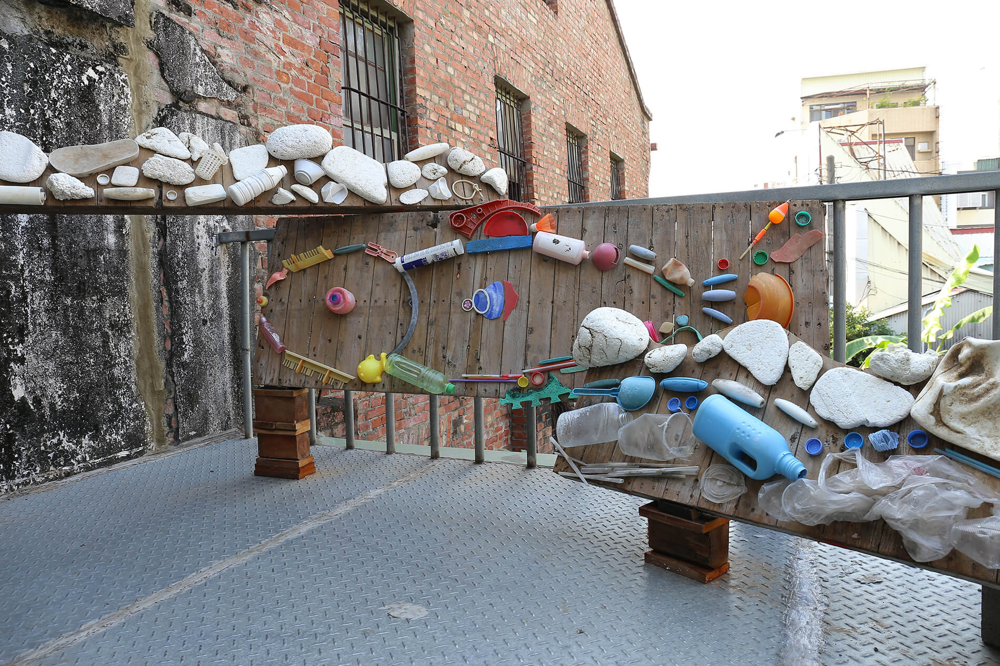 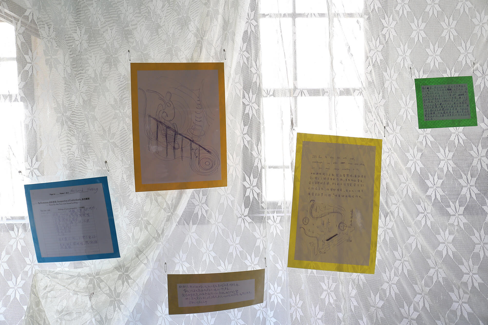
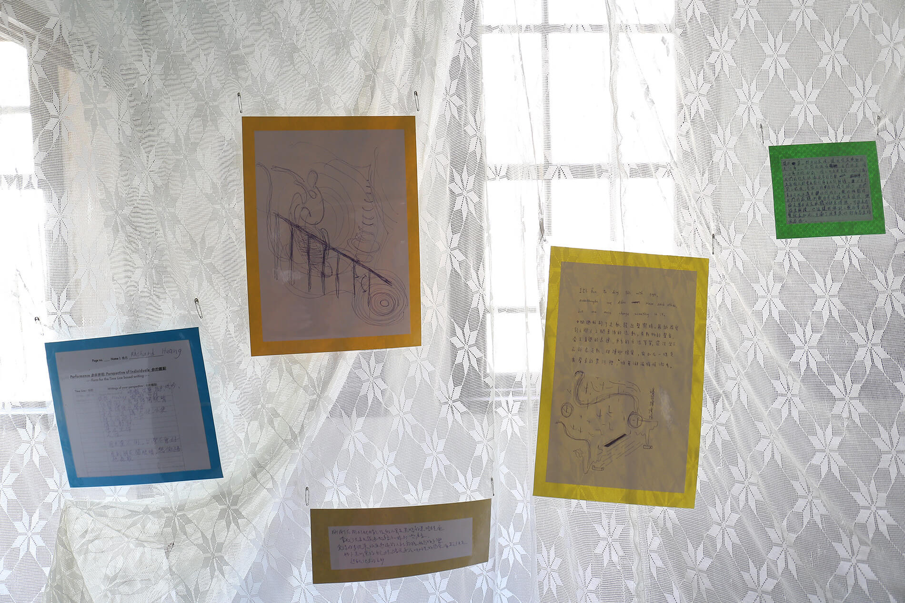
作品介紹：
這件作品是我在做人體模特工作時，在腦海中跑出來的：作為人體模特兒，被物件化的時候，可以為自己發聲，但大自然沒有言語，祂是靜默的接受。時代不斷的快速變遷，我們有時忘了呼吸，任由身邊的風景，像沒有生命的屏幕一般，一幕一幕無聲的流逝。但大自然不會忘，祂一直記憶著，這份記憶隨著循環的流，流向你我。
備註：作品中使用素材由沙灘上撿拾的海洋廢棄物構成。
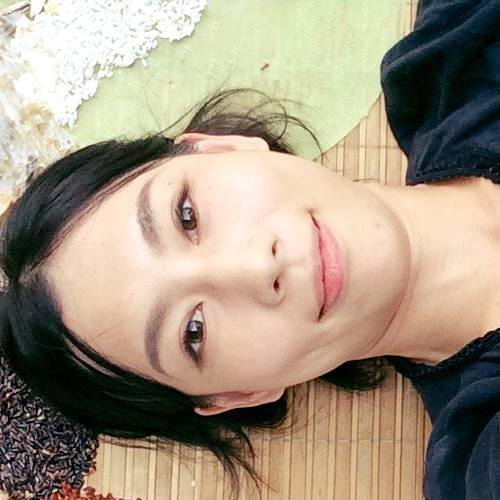
│花崎草
生於1987年，於2012年取得東京藝術大學跨媒體藝術碩士學位。行為藝術和裝置是她的主要創作領域。作品目的在於緩和人類生活環境所塑造之價值觀，以及展望更美好的人類社會系統。
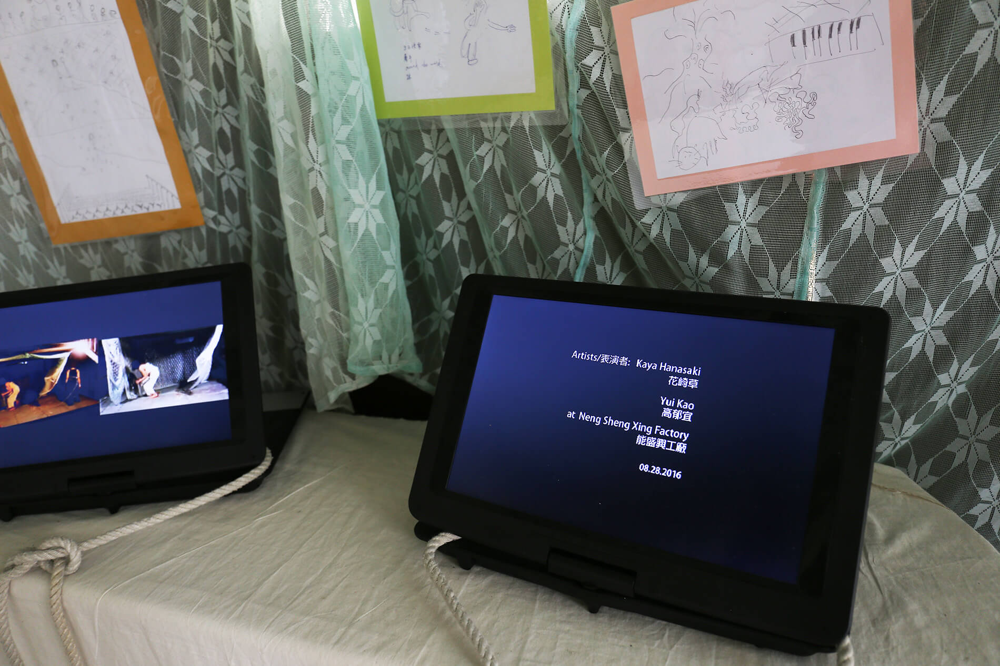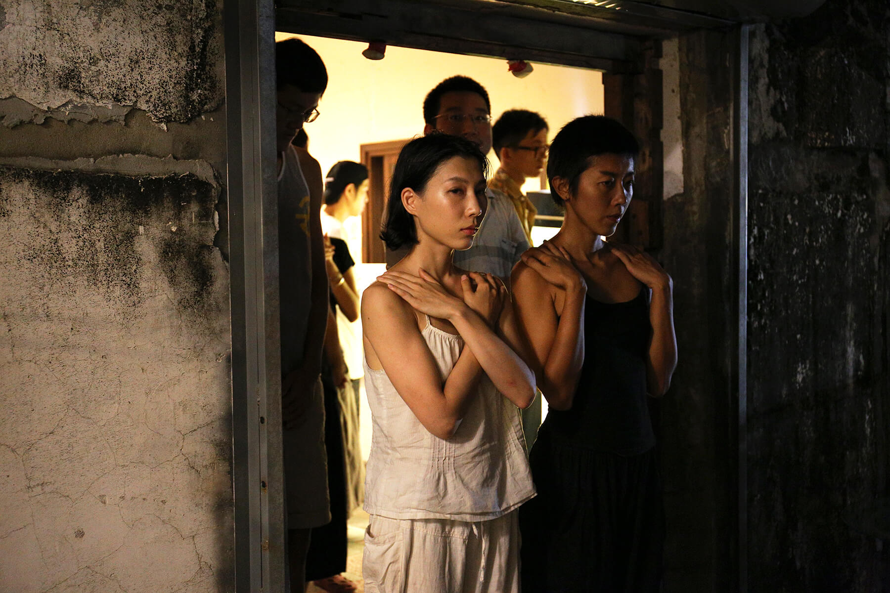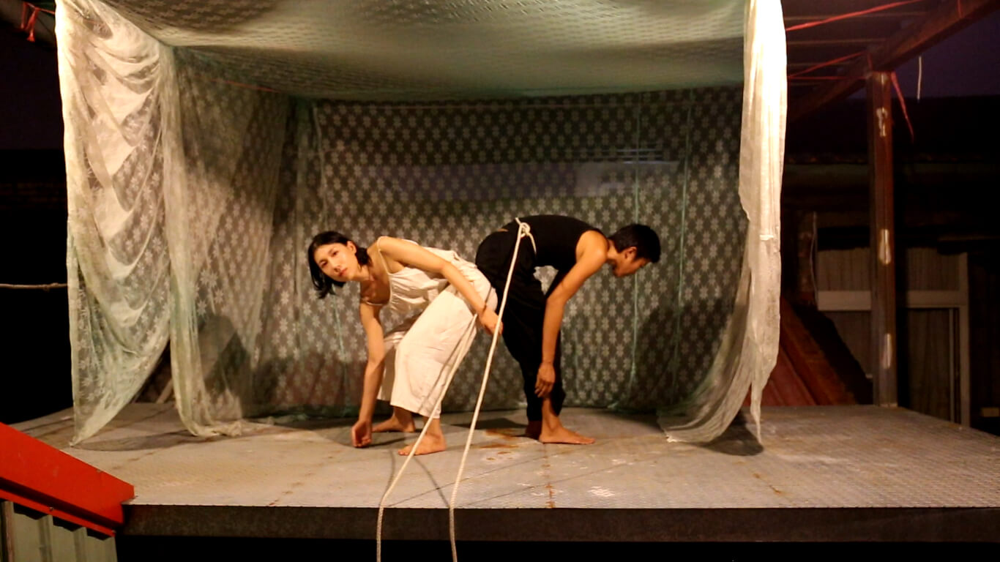
作品：你的觀點
《你的觀點》
一反藝術家或策展人的企圖主導之常態，觀眾將把他們的觀點分享進作品裡。即便這些觀點仍然是處於專家生產的特定觀念，或評論的陰影中。《你的觀點》表演，邀請了觀眾來參與，並且根據自己的觀賞經驗，分享自己的寫作或圖畫。來看展的訪客就可以看到表演的影音紀錄，跟觀眾的回饋。
第一幕︰我們在找尋什麼？
高郁宜（能盛興主要成員，藝術家）跟我在能盛興工廠的其中一個屋頂，演出了表演的第一幕。我將台灣傳統的蚊帳比喻成「社會」。事實上，我在駐村期間的每一晚都睡在裡面。這個表演以抽象的方式演示了逃出「社會」的意象，蚊帳就像社會中隱形的隔閡。這個意象的靈感來源是取自能盛興工廠自身運作的管理態度，比如像舉辦小農無毒市集、廢核遊行跟多元成家遊行。這些活動展現了他們對當今社會，持有不同的視角跟價值觀，更進一步要跟其他人一起在日常生活中，打造更好的社會。高郁宜就是其中一位，從單一設定的社會中出走，並跟家人做出一個新的社會。我被連結兩人肚子上的繩索，從蚊帳中被拖了出去。這條繩索對我來說像是「臍帶」，「家人」是能盛興的重要關鍵字，在他們的特殊定義下，家人不意味著血緣，而是共同進行生活的基本活動如吃飯、穿衣、整理屋子跟工作。另外還有一種溫情是無法形容跟觀看的，但我相信這種「溫情-家庭-感動」是創造新社會的要旨。不過這個主題在表演中是較不顯著的，因為此次表演是希望人們進行想像跟產生觀點，不在呈現一種敘事或觀念。我的企圖是分享我在能盛興創作的靈感，給那些來提供觀點的人。
第二幕︰遮蔽視野，沒了觀眾
物派（活躍於60及70年代的日本）藝術家及其運動的重要理念是︰翻轉「藝術家作為主體」、「藝術品作為客體」，一直到「藝術品（客體-物）作為主體」的感知方式。不只是視覺作品，在表演中的表演者跟觀眾的關係，也在演出中被翻轉。表演藝術家通常是被看作創作表演的主體，也經常在表演中被期待作為一個表演人甚至是整個空間的領導。不過，Tino Sehgal（近日最火紅的表演藝術家之一）創作過一系列叫做〈建造的情境〉的作品，在演出中他邀請了包含非專業表演者的人們進行表演，但自己並不參與其中。第二幕〈個人觀點〉同樣試圖翻轉創作的邏輯，讓參與者用自己的身體跟行為變成創造時空的人。唯一對參與者下過的指令就是閉上眼睛，並在能盛興的二樓發出聲音進行探索。這次他的作品跟我的作品不同之處在，我在表演當晚之前，都沒有給出任何提示。同時，第一幕跟第二幕間，參與者參與兩個表演的方式有很大的衝突。在第一幕中，觀看以獲得資訊，是接觸藝術作品裡最重要的元素；但第二幕則讓他們用其他的感官，並自由地成為表演者來經驗表演。這些實驗是相當令人振奮的，像是漫步走進社會的縮影。
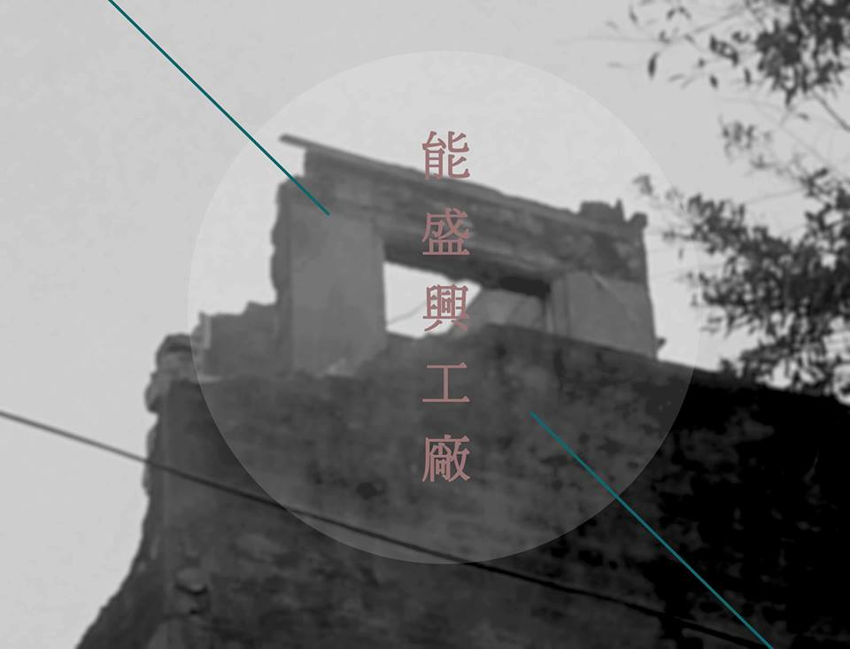
│能盛興工廠
2013年能盛興工廠成立，與其他的藝文空間迥異，組成的成員是一群關心生存環境、以社會運動為導向，平均年齡26歲的青年團隊。從一張共同煮食的餐桌，逐漸形成互相關照的大家庭，團隊以公社形式經營空間，以社運、展演、講座、市集等形式促進更多關於環保、自然農法、多元成家等法案的審議推進與推廣教育。
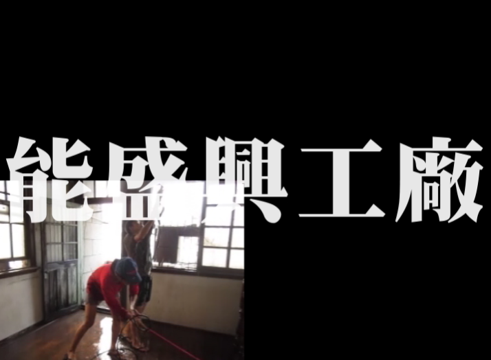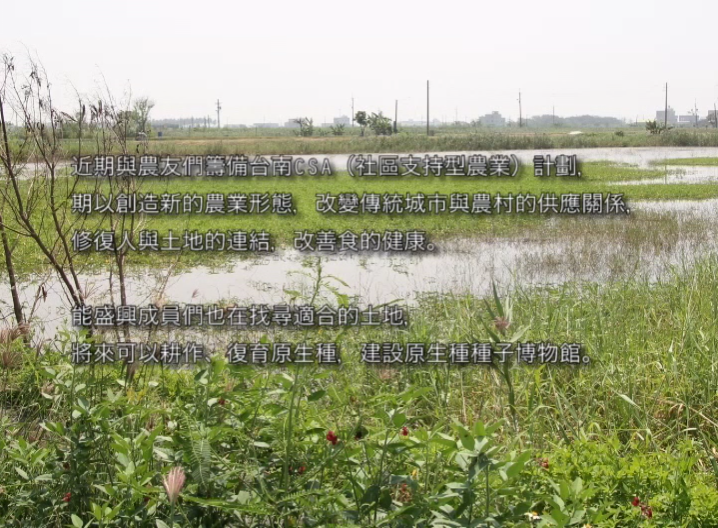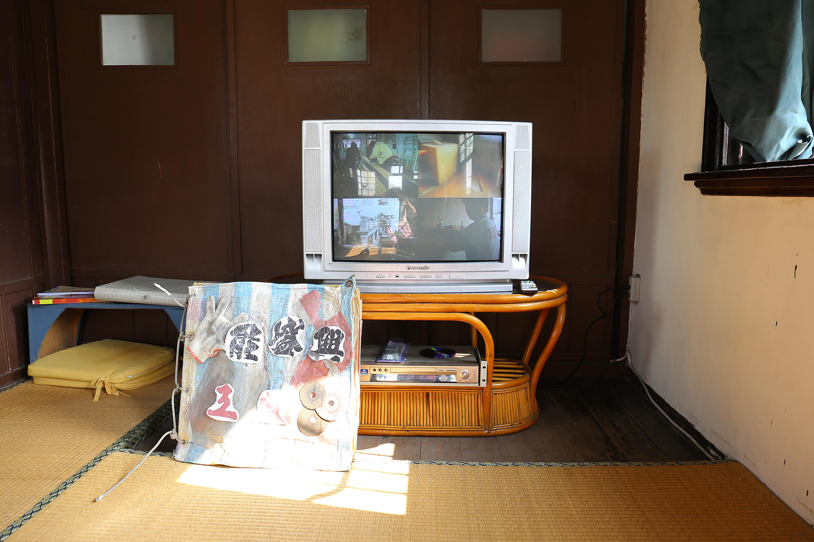
作品：能盛興工廠 紀錄片
「能盛興工廠，位於台南市的多功能藝文空間，原為八十年歷史的老舊工廠，在荒廢二十年後由一群年輕人進駐、整修，現為展演空間、獨立書店、國際藝術村及無毒農產品和創作者的寄售空間。關注社會、環境及性別議題，不定時舉辦各類型活動，每月定期舉辦小農市集。」
故事總是這麼說起的。許多人給了這裡預想、好奇、質疑或是欣羨；是人民公社還是波西米亞？是不切實際或是實踐夢想？而寫在各種定位之前，是一些人就這麼相識，共同生活，想些想做的事情來做的紀事罷了。
在每一次的事件裡聚合了形形色色的人—在空間放鬆的客人，關心議題的志工，一起玩耍的朋友，共同合作的夥伴們，其中勞動、玩樂、討論、爭執……也無一不少。能盛興工廠是什麼呢？或許是那珍貴的緣分，感謝大家與我們相遇。
策展人介紹

║蔡繡如║
是何許人也？不能固著難以定義。她曾說她是一面鏡，但那個接受面對他自己倒影的人，要小心體內的一些存在將從自我的影像中溜出去，並且可能取代他原來的位子。雨不存在，蔡繡如也可能不存在。如同無人看得見雨，可能也沒有此人存在的任何見證。請你從旁邊經過，或者去躲起來。
║邱柏廷║
天龍國籍/際策展人，於台南能盛興工廠執業，目前正進行駐村藝術家照護的工作。曾數度假借藝術展覽之名，舉辦人類知識的雜交派對，自己則最喜歡人類學跟精神分析的組合，目前正撰寫相關研究論文。身體嬌嫩，沒肉吃會死。